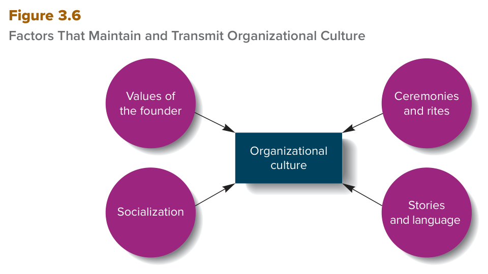
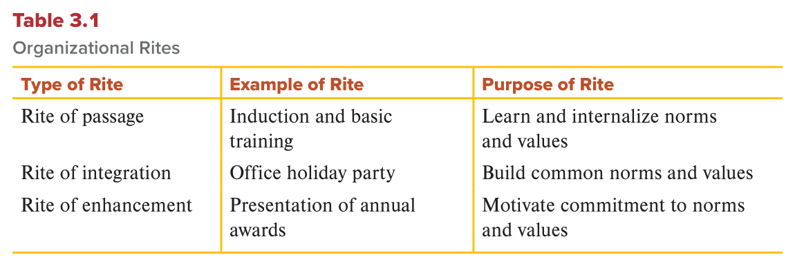

MGT 102 · Chapter 3 · Section 4 of 4:
Organizational Culture
Objective LO3-5: Define organizational culture, and explain how managers both create and are influenced by organizational culture.
The three sections before this one were about one individual: his personality, his values, his attitudes, his mood. Now the book asks a different question: what happens when many people work in the same place? The answer: they start to share beliefs, values, and work routines — and what comes out of that is organizational culture.
The wording of LO3-5 has two parts you must notice: managers create the culture, and managers
are influenced by the culture. So the relationship goes in two directions — he makes it, and it
comes back and controls him. Any question that gives you one direction only is probably incomplete.
This section also has one figure and one table with numbers on them (Figure 3.6 and Table 3.1). Both are among the most testable things in the chapter. Memorize the number four and the number three.
You already met these ideas in Arabic. This page gives you the same ideas in English, because your textbook and your exam are in English.
The book opens the section with a smart link. Personality is a way of understanding why every manager and every employee — as an individual — thinks and behaves in his own way. But when people belong to the same organization, they tend to share certain beliefs and values that lead them to act in similar ways. That shared thing is called organizational culture.
The definition — memorize it in English: the shared set of beliefs · expectations · values · norms · work routines that influence how individuals, groups, and teams interact with one another and cooperate to achieve organizational goals. So the definition has five parts — count them on your fingers:
| # | Part | What it means |
|---|---|---|
| 1 | Beliefs | What we believe is right |
| 2 | Expectations | What is expected from me and from you |
| 3 | Values | What we aim for and how we behave (go back to section 2) |
| 4 | Norms | Unwritten rules of appropriate behavior |
| 5 | Work routines | The usual way we do the work |
What does culture reflect? It reflects the distinctive ways in which organizational members perform their jobs and relate to others inside and outside the organization. Two examples from the book: how customers in a particular hotel chain are treated from the moment they are greeted at check-in until they leave; or the shared work routines that research teams use to guide new product development.
Here is a guaranteed exam trap. The book separates two cases:
| Strong culture | Weak culture | |
|---|---|---|
| The case | Members share an intense commitment to cultural values, beliefs, and routines and use them to achieve their goals | Members are not strongly committed to a shared system of values, beliefs, and routines |
| The key words | intense commitment · shared | not strongly committed |
And the stronger the culture of an organization, the easier it is to think about it as the “personality of the organization” — because it influences the way its members behave. Careful: this is a comparison the book makes, not a claim that an organization really has a personality.
Strong cultures also differ from each other on many dimensions that determine how members behave. The book gives you five of them:
The comparison the book builds on these dimensions (memorize the names):
| IDEO — a design firm in Silicon Valley | Citibank and ExxonMobil | |
|---|---|---|
| The atmosphere | Employees are encouraged to adopt a playful attitude toward their work | Employees treat each other in a more formal or deferential way, and are expected to adopt a serious approach |
| Where ideas come from | They look outside the organization to find inspiration | — |
| Decisions and design | A flexible approach to product design that uses multiple perspectives | Decision making is constrained by the hierarchy of authority |
Organizational culture comprises the shared set of beliefs, expectations, values, norms, and work routines that influence how members of an organization relate to one another and work together to achieve organizational goals. In essence, organizational culture reflects the distinctive ways in which organizational members perform their jobs and relate to others inside and outside the organization.
When organizational members share an intense commitment to cultural values, beliefs, and routines and use them to achieve their goals, a strong organizational culture exists. When organizational members are not strongly committed to a shared system of values, beliefs, and routines, organizational culture is weak. The stronger the culture of an organization, the more one can think about it as being the "personality" of an organization because it influences the way its members behave.
The book is clear: all members of an organization can contribute to developing and maintaining the culture, but managers play a particularly important part in influencing it — and the reason the book gives is their multiple and important roles (go back to Mintzberg's roles in Chapter 1).
The clearest place to see a manager creating culture is in startups of new companies. Entrepreneurs who start their own companies are typically also the startups' top managers until the companies grow and become profitable. They are often referred to as the firms' founders, and these managers literally create their organizations' cultures.
The founder's personal characteristics play an important role in creating the culture. The well-known management researcher Benjamin Schneider developed a model that explains that role, and it is called the attraction–selection–attrition (ASA) framework.
The definition — memorize it in English: a model that explains how personality may influence organizational culture. And its three stages are its own name:
| # | Stage | What happens |
|---|---|---|
| 1 | Attraction الجذب |
When founders hire employees for their new ventures, they are attracted to employees whose personalities are similar to their own |
| 2 | Selection الاختيار |
And they actually choose those similar people |
| 3 | Attrition التسرّب |
The similar ones are more likely to stay; the ones who are dissimilar — even if they are hired — are more likely to leave the organization over time |
The result: people in the organization tend to have similar personalities, and the typical or dominant personality profile of organizational members determines and shapes organizational culture.
The book's example — David Kelley and IDEO:
Do not leave this model thinking it is all good news. The book adds four reservations:
What did Kelley himself do? He recognized early on how important it is to take advantage of the diverse talents and perspectives that people with different personalities, backgrounds, experiences, and education can bring to a design team. That is why IDEO's design teams include not only engineers but also anthropologists, communications experts, doctors, and users of the product themselves. And when a new employee is hired, he meets many employees with different backgrounds — the focus is not on hiring someone who will fit in, but on hiring someone who has something to offer and can “wow” different kinds of people with his insights.
In addition to personality, the book says other personal characteristics of managers shape the culture — and all of them come from the sections you have already read:
| The characteristic | How it turns into culture (the book's example) |
|---|---|
| Values terminal and instrumental |
A manager who highly values freedom and equality is likely to stress the importance of autonomy and empowerment, as well as fair treatment for all. And a manager who highly values being helpful and forgiving might not only tolerate mistakes but also stress that members should be kind and helpful to one another. |
| Attitudes satisfaction and commitment |
Managers who are satisfied with their jobs and committed to their organizations might encourage these same attitudes in others. Research suggests that job satisfaction and organizational commitment can be affected by the influence of others, and that managers are in a particularly strong position to engage in social influence, given their multiple roles. |
| Moods and emotions and emotional intelligence | A manager who is satisfied with his job, is committed to the organization, and experiences positive moods and emotions might encourage these same attitudes and feelings in others; the result would be a culture emphasizing positive attitudes and feelings. Research suggests that moods and emotions can be contagious — spending time with people who are excited and enthusiastic raises your own level of excitement. |
While all members of an organization can contribute to developing and maintaining organizational culture, managers play a particularly important part in influencing organizational culture because of their multiple and important roles. Entrepreneurs who start their own companies are typically also the startups' top managers until the companies grow and become profitable. Often referred to as the firms' founders, these managers literally create their organizations' cultures.
Benjamin Schneider developed a model, called the attraction–selection–attrition (ASA) framework, which posits that when founders hire employees for their new ventures, they tend to be attracted to and choose employees whose personalities are similar to their own. These similar employees are more likely to stay with the organization. Although employees who are dissimilar in personality might be hired, they are more likely to leave the organization over time. As a result of these attraction, selection, and attrition processes, people in the organization tend to have similar personalities, and the typical or dominant personality profile of organizational members determines and shapes organizational culture.
However, while people tend to get along well with others who are similar to themselves, too much similarity in an organization can impair organizational effectiveness. Organizations benefit from a diversity of perspectives rather than similarity in perspectives.
Shared values play a particularly important role in the culture, with the same split you learned in section 2:
In addition to values, shared norms are also a key aspect of the culture. And remember the definition of norms from section 2: unwritten, informal rules or guidelines that prescribe appropriate behavior in particular situations.
The book's examples of IDEO's norms — three of them:
And the conclusion: managers determine and shape the culture through the kinds of values and norms they promote in the organization.
This is the main comparison of the whole section, and it comes back again in concept 5. Learn it as a table:
| An innovative culture | A conservative, cautious culture | |
|---|---|---|
| Values and norms | risk taking · creative responses to problems and opportunities · experimentation · tolerance of failure in order to succeed · autonomy | Be conservative and cautious in your dealings with others, and consult your superiors before important decisions or any changes to the status quo |
| Accountability and records | — | Accountability for actions and decisions is stressed, and detailed records are kept to ensure that policies and procedures are followed |
| The book's examples | IDEO (David Kelley) · Microsoft · Google — they encourage these values to support their commitment to innovation as a source of competitive advantage | Nuclear power stations · oil refineries · chemical plants · financial institutions · insurance companies |
Why is caution sometimes sensible? In settings where caution is needed: in a nuclear power plant, the catastrophic consequences of a mistake make a high level of supervision vital. Similarly, in a bank or a mutual fund company, the risk of losing investors' money makes a cautious approach appropriate.
The conclusion the book ends with: managers of different kinds of organizations deliberately cultivate and develop the values and norms that are best suited to their task and general environments, strategy, or technology.
Shared terminal and instrumental values play a particularly important role in organizational culture. Terminal values signify what an organization and its employees are trying to accomplish, and instrumental values guide how the organization and its members achieve organizational goals. In addition to values, shared norms also are a key aspect of organizational culture. Norms are unwritten, informal rules or guidelines that prescribe appropriate behavior in particular situations.
Managers determine and shape organizational culture through the kinds of values and norms they promote in an organization. Some managers cultivate values and norms that encourage risk taking, creative responses to problems and opportunities, experimentation, tolerance of failure in order to succeed, and autonomy. Other managers might cultivate values and norms that tell employees they should be conservative and cautious in their dealings with others and should consult their superiors before making important decisions or any changes to the status quo. Managers of different kinds of organizations deliberately cultivate and develop the organizational values and norms that are best suited to their task and general environments, strategy, or technology.
After explaining how a manager cultivates values and norms, the book asks: so how does the culture stay and reach the new people? The answer is four factors — memorize the number 4 and their English names:

This is Figure 3.6. Organizational culture is in the middle, and four elements around it feed it. How to read it: all four are inputs — they maintain the culture and transmit it to new members. There is no time order between them and no stage that comes before another. What gets asked: “What are the four factors that maintain and transmit culture?” or a NOT question that gives you three correct ones and one intruder like attraction–selection–attrition or organizational structure. Memorize the four in English word for word.
From the ASA model it is clear that founders can have profound and long-lasting effects on the culture. Their values inspired them to start their own companies and, in turn, drive the nature of these new companies and their defining characteristics. So the terminal and instrumental values of the founder have a substantial influence on the values, norms, and standards of behavior that develop over time inside the organization.
How do the founder's values spread? A chain of five steps — memorize the order:
A general example from the book: a founder who requires a great display of respect from employees and insists on “correctness” — such as formal job titles and formal dress — encourages his managers to act the same way toward their employees.
And often the founder's personal values affect the organization's competitive advantage:
| The founder | The company | What he planted |
|---|---|---|
| Ray Kroc | McDonald's | Insisted from the beginning on high standards of customer service and cleanliness — and these became core sources of competitive advantage. |
| Bill Gates (the cofounder) | Microsoft | Employees are expected to be creative and to work hard, but they are encouraged to dress informally and personalize their offices. He also established company events such as cookouts, picnics, and sports events to emphasize the importance of being both an individual and a team player. |
Over time, organizational members learn from each other which values are important and which norms specify appropriate and inappropriate behavior. Eventually they behave in accordance with the organization's values and norms — often without realizing they are doing so. And that is exactly what makes culture a significant force in shaping employees' behavior.
The definition — memorize it in English: organizational socialization is the process by which newcomers learn an organization's values and norms and acquire the work behaviors necessary to perform jobs effectively.
And its result: members internalize the organization's values and norms and behave in accordance with them — not only because they think they have to, but because they think these values and norms describe the right and proper way to behave.
The book's three examples of socialization programs:
| The organization | The program and the details |
|---|---|
| Texas A&M University | All new students are encouraged to go to “Fish Camp” to learn how to be an “Aggie” (the traditional nickname of students at the university). They learn about the ceremonies that developed over time to commemorate significant events or people in the university's history, and how to behave at football games and in class, and what it means to be an Aggie. The result: by the time they arrive on campus and start their first semester, they have already been socialized and have relatively few problems adjusting. |
| The military | Well known for the rigorous socialization process it uses to turn raw recruits into trained soldiers. |
| The Walt Disney Company | Puts new recruits through a rigorous training program. New recruits are called “cast members” and attend Disney University to learn the Disney culture and their parts in it. Disney's culture emphasizes four values: safety · courtesy · entertainment · efficiency — and these values are brought to life for newcomers at Disney University. They also learn about the attraction area they will be joining (such as Adventureland or Fantasyland), and then receive on-the-job socialization in the area itself from experienced cast members. The result: the values and norms of founder Walt Disney live on today as newcomers are socialized into “the Disney way”. |
Another way in which managers can create or influence the culture: they develop organizational ceremonies and rites.
The definition — memorize it in English: formal events that recognize incidents of importance to the organization as a whole and to specific employees.
And the three most common rites organizations use to transmit cultural norms and values to their members are rites of passage · rites of integration · rites of enhancement. This is Table 3.1 in the book:

This is Table 3.1 — the most testable table in the whole chapter. How to read it: three columns (Type of Rite | Example of Rite | Purpose of Rite) and three rows. The differences between the purposes are very fine: Learn and internalize vs Build common vs Motivate commitment. What gets asked: they give you an example and ask which type of rite it is, or they give you the purpose and ask for the type. Memorize the whole table in English.
| Type of Rite | Example of Rite | Purpose of Rite |
|---|---|---|
| Rite of passage | Induction and basic training | Learn and internalize norms and values |
| Rite of integration | Office holiday party | Build common norms and values |
| Rite of enhancement | Presentation of annual awards | Motivate commitment to norms and values |
1) Rites of passage: they determine how individuals enter the organization, advance within it, and leave it. The book's examples: the socialization programs developed by military organizations (such as the U.S. Army) or by large accountancy and law firms. Also: the ways an organization prepares people for promotion or retirement.
2) Rites of integration: they build and reinforce common bonds among organizational members. General examples: shared announcements of organizational successes, office parties, and company cookouts.
3) Rites of enhancement: they let organizations publicly recognize and reward employees' contributions and thus strengthen their commitment to organizational values. Examples: awards dinners, employee promotions, and recognition in press releases and social media posts. The mechanism: by bonding members within the organization, rites of enhancement reinforce the organization's values and norms.
Stories: stories — whether fact or fiction — about organizational heroes and villains and their actions provide important clues about values and norms. They reveal the kinds of behaviors the organization values and the kinds of practices that are frowned upon.
The central example — Ray Kroc and McDonald's: at the heart of McDonald's rich culture are hundreds of stories that members tell about the founder. Most of them focus on how he established the strict operating values and norms that are at the heart of the company's culture. Kroc was dedicated to achieving perfection in four values — QSC&V:
And these four central values permeate McDonald's culture. The often retold story: Kroc and a group of managers from the Houston region were touring various restaurants. One restaurant was having a bad day operationally. Kroc was incensed about the long lines of customers, and he was furious when he realized that the products customers were receiving that day were not up to his high standards. So what did he do? He jumped up and stood on the front counter to get the attention of all customers and crew, introduced himself, apologized for the long wait and the cold food, and told the customers they could have freshly cooked food or their money back — whichever they wanted. The result: the customers left happy; and when he checked on the restaurant later, he found that his message had gotten through to the managers and crew — performance had improved. Other stories describe him scrubbing dirty toilets and picking up litter inside or outside a restaurant. These stories are what established Kroc as McDonald's “hero”.
Language: because spoken language is a principal medium of communication in organizations, the characteristic slang or jargon — that is, organization-specific words or phrases — that people use to frame and describe events provides important clues about norms and values.
Organizational culture is maintained and transmitted to organizational members through the values of the founder, the process of socialization, ceremonies and rites, and stories and language. Founders of an organization can have profound and long-lasting effects on organizational culture. Gradually, over time, the founder's values and norms permeate the organization.
Organizational socialization is the process by which newcomers learn an organization's values and norms and acquire the work behaviors necessary to perform jobs effectively. As a result of their socialization experiences, organizational members internalize an organization's values and norms and behave in accordance with them, not only because they think they have to but because they think these values and norms describe the right and proper way to behave.
Another way in which managers can create or influence organizational culture is by developing organizational ceremonies and rites—formal events that recognize incidents of importance to the organization as a whole and to specific employees. The most common rites that organizations use to transmit cultural norms and values to their members are rites of passage, of integration, and of enhancement. Rites of passage determine how individuals enter, advance within, and leave the organization. Rites of integration build and reinforce common bonds among organizational members. Rites of enhancement let organizations publicly recognize and reward employees' contributions and thus strengthen their commitment to organizational values.
Stories and language also communicate organizational culture. Stories (whether fact or fiction) about organizational heroes and villains and their actions provide important clues about values and norms. The concept of organizational language encompasses not only spoken language but how people dress, the offices they occupy, the cars they drive, and the degree of formality they use when they address one another.
Culture influences how a manager performs his four main functions: planning · organizing · leading · controlling (go back to Chapter 1). And here the book follows the same split you took above: top managers who create values and norms that encourage creative, innovative behavior, versus top managers who encourage a conservative, cautious approach. And both can be appropriate depending on the situation and the type of organization — the book repeats this word for word just before the table.
| Function | In an innovative culture | In a conservative culture |
|---|---|---|
| Planning | Top managers encourage lower-level managers to participate in the planning process and develop a flexible approach to planning; they are willing to listen to new ideas and take risks involving the development of new products | They emphasize formal top-down planning; suggestions from lower-level managers are subjected to a formal review process — and this significantly slows decision making |
| Organizing | They try to create an organic structure: flat, with few levels in the hierarchy, and with decentralized authority so employees work together to solve ongoing problems. A product team structure may be suitable | They create a well-defined hierarchy of authority and establish clear reporting relationships so an employee knows exactly whom to report to and how to react to any problem that arises |
| Leading | They lead by example, encourage employees to take risks and experiment, and are supportive regardless of whether they succeed or fail | They use management by objectives and constantly monitor employees' progress toward goals, overseeing their every move |
| Controlling | They recognize that there are multiple potential paths to success and that failure must be accepted for creativity to thrive; they are less concerned about employees performing their jobs in a specific, predetermined manner and in strict adherence to preset goals, and more concerned about employees being flexible and taking the initiative; and more concerned about long-term performance than short-term targets, because real innovation entails much uncertainty that necessitates flexibility | They set specific, difficult goals for employees, frequently monitor progress, and develop a clear set of rules that employees are expected to adhere to |
The book's note on planning: although this deliberate approach may improve the quality of decision making in a nuclear power plant, it can have unintended consequences in other organizations.
The IBM example — memorize the sequence of CEOs:
(The book says leadership is covered in detail in Chapter 14.)
The big conclusion (ready for an essay question):
The dark side — dysfunctional cultures: the IDEO example shows how culture can give rise to managerial actions that ultimately benefit the organization — but this is not always the case. The cultures of some organizations become dysfunctional, encouraging managerial actions that harm the organization and discouraging actions that might improve performance. The book mentions recent corporate scandals at large companies: Boeing · Google · Facebook · Wells Fargo.
The Boeing example with its numbers: Boeing's arrogant “success at all cost” mentality led to fraudulent behavior on the part of top managers and others, which may have indirectly caused two fatal crashes of the 737 MAX and the deaths of 346 people, and led to the firing of Boeing's CEO. (Ethics is covered in detail in Chapter 4.)
While founders and managers play a critical role in developing, maintaining, and communicating organizational culture, the same culture shapes and controls the behavior of all employees, including managers themselves. Culture influences how managers perform their four main functions: planning, organizing, leading, and controlling. Both kinds of values and norms can be appropriate depending on the situation and type of organization.
The values and norms of an organization's culture strongly affect the way managers perform their management functions. The extent to which managers buy into the values and norms of their organization shapes their view of the world and their actions and decisions in particular circumstances. In turn, the actions that managers take can have an impact on the performance of the organization. Thus, organizational culture, managerial action, and organizational performance are all linked together.
The cultures of some organizations become dysfunctional, encouraging managerial actions that harm the organization and discouraging actions that might improve performance.
LO3-5 word for word.The questions are in English because the exam is in English. Answer first, then open the solution. If you miss question 3 or 4, go back to Figure 3.6 and Table 3.1 and memorize them in English.
B. Intense commitment + shared values, beliefs, and routines + using them to achieve the goals = the definition of a strong organizational culture, word for word. The trap is in A: a weak culture is the exact opposite — not strongly committed. C is a trap: a dysfunctional culture is a third thing; it encourages actions that harm the organization, like at Boeing — and the question has no harm in it. And D is a trap from Chapter 1: organizational structure is a formal system of task and reporting relationships, not shared beliefs.
B. The three stages are all in the question: he is attracted to and chooses the similar ones (attraction + selection), the different ones leave (attrition), and the dominant profile shapes the culture. The owner of the model is Benjamin Schneider. The trap is in A: socialization is teaching newcomers the organization's values and norms — it is not choosing who comes and who goes. C is a trap: rites of integration are formal events that build common bonds. And D is a trap from section 2: a value system is one person's terminal and instrumental values as the guiding principles of his life.
C. The four in Figure 3.6 are: values of the founder · socialization · ceremonies and rites · stories and language. And ASA is a model that explains how personality influences culture — it is not a way of transmitting it. The trap: the question uses NOT and gives you three correct ones so that you rush, and the wrong choice is a real term from the same section — that is the nastiest kind. The number is four, and the fourth one missing from the choices is ceremonies and rites.
C. Awards dinners, employee promotions, and recognition in press releases are the book's own examples of rites of enhancement, and their purpose in Table 3.1 is motivate commitment to norms and values. The trap is in A: the purpose of passage is learn and internalize and its example is induction and basic training. B is a trap: the example of integration is an office holiday party and its purpose is build common — a party, not an award. And D is a combined trap: the purpose is right (motivate commitment) but the type is wrong (passage instead of enhancement) — read both halves before you choose.
B. Formal top-down planning + formal review process + accountability + detailed records = the fingerprint of a conservative, cautious culture, and the nuclear power plant is the book's own example of it. The trap is in A: an innovative culture encourages lower-level managers to participate in planning with a flexible approach — the opposite of the question. C is the biggest trap: the book is explicit that both kinds are appropriate depending on the situation, and in a nuclear plant the catastrophic consequences of a mistake make a high level of supervision vital — so conservative here is right, not dysfunctional. And D is a trap: weak means there is no shared commitment, while the question describes a culture that is clear and committed to its rules.
| Term | What it means | Watch out for |
|---|---|---|
| Organizational culture | The shared set of beliefs, expectations, values, norms, and work routines | 5 parts: beliefs · expectations · values · norms · work routines |
| Strong culture | Members share an intense commitment to the values, beliefs, and routines | intense commitment to a shared system + they use it to achieve the goals |
| Weak culture | Members are not strongly committed to a shared system | not strongly committed — not “small” and not “wrong” |
| Attraction–selection–attrition (ASA) framework | A model that explains how personality may influence organizational culture | personality → culture, not the reverse · its owner is Benjamin Schneider · too much similarity impairs effectiveness |
| Founders | The entrepreneurs who start the company and are usually its top managers | they literally create the culture; their effect is profound and long-lasting |
| Terminal values | What the organization is trying to accomplish | in culture = what |
| Instrumental values | How the organization achieves its goals | in culture = how |
| Norms | Unwritten, informal rules that prescribe appropriate behavior | unwritten and informal — the opposite of ceremonies and rites |
| Organizational socialization | The process by which newcomers learn the values and norms and acquire the work behaviors | newcomers · the result is that they internalize the values |
| Organizational ceremonies and rites | Formal events that recognize incidents of importance | formal events · 3 types |
| Rites of passage | How individuals enter, advance within, and leave the organization | enter · advance · leave · example induction and basic training · purpose learn and internalize |
| Rites of integration | They build and reinforce common bonds among members | common bonds · example office holiday party · purpose build common · Walmart |
| Rites of enhancement | They publicly recognize and reward employees' contributions | public recognition and reward · example presentation of annual awards · purpose motivate commitment |
| Stories | Accounts about organizational heroes and villains and their actions | fact or fiction · about heroes and villains · Ray Kroc |
| Slang / jargon | Organization-specific words or phrases | organization-specific words or phrases · “ketchup in their blood” |
| Organizational language | Spoken language plus dress, offices, cars, and degree of formality | broader than speech: dress · offices · cars · degree of formality |
| QSC&V | Quality · Service · Cleanliness · Value for money | McDonald's four values — not Disney's four (safety · courtesy · entertainment · efficiency) |
| Organic structure | A flat structure with few levels and decentralized authority | flat · few levels · decentralized = an innovative culture |
| Management by objectives | Setting goals and constantly monitoring progress toward them | leading in a conservative culture — constant monitoring |
| Dysfunctional culture | A culture that encourages actions which harm the organization | not the same as conservative · it harms the organization · Boeing · Wells Fargo · the 737 MAX and 346 deaths |
These are the general English words on this page, not the management terms. Learn them and the textbook gets much easier to read.
| Word | Part of speech | العربية | Example sentence from this lesson |
|---|---|---|---|
| arrogant | adjective | متغطرس / متكبّريعني يشوف نفسه أحسن من الكل وما يسمع أحد | Boeing's arrogant "success at all cost" mentality led to fraudulent behavior on the part of top managers. |
| catastrophic | adjective | كارثييعني الخطأ يطلع ضرره ضخم جداً، مو غلطة عادية | In a nuclear power plant, the catastrophic consequences of a mistake make a high level of supervision vital. |
| contagious | adjective | معدييعني ينتقل من واحد لواحد زي المرض، بس هنا مزاج ومشاعر | Research suggests that moods and emotions can be contagious. |
| cultivate | verb | يزرع / ينمّييعني تزرع الشي وتسقيه لين يكبر، والكلام هنا عن قيم مو نباتات | Managers of different kinds of organizations deliberately cultivate the values and norms that are best suited to their environments. |
| deliberately | adverb | بقصد / عن عمديعني سواها وهو يدري ومخطط لها، مو صدفة | Managers of different kinds of organizations deliberately cultivate the values and norms that are best suited to their environments. |
| dimension | noun | بعد / جانبيعني ناحية تقيس عليها الشي، زي الطول والعرض بس معنوية | Strong cultures differ from each other on many dimensions that determine how members behave. |
| distinctive | adjective | مميّزيعني الشي اللي تعرف الجهة منه، ما تلقاه بنفس الشكل عند غيرهم | Culture reflects the distinctive ways in which organizational members perform their jobs. |
| dominant | adjective | مهيمن / الغالبيعني الأقوى والأكثر حضور، هو اللي يفرض نفسه على الباقي | The typical or dominant personality profile of organizational members determines and shapes organizational culture. |
| embody | verb | يجسّديعني الشي يطلع فيه طبع صاحبه بالكامل، تشوفه فيه | From the start, IDEO's culture has embodied Kelley's spirited, freewheeling approach to work. |
| encompass | verb | يشمل / يضميعني يحتوي أشياء أكثر من اللي تتوقع، مو بس شي واحد | The concept of organizational language encompasses more than speech. |
| fraudulent | adjective | احتيالي / تغشيشييعني فيه غش وتضليل عشان مصلحة، وممكن يكون جريمة | Boeing's arrogant mentality led to fraudulent behavior on the part of top managers and others. |
| impair | verb | يضرّ / يضعفيعني يخلي الشي يشتغل أقل من قدرته، ينقصه مو يوقفه | Too much similarity in an organization can impair organizational effectiveness. |
| internalize | verb | يستدخل / يتبنّى من جوّهيعني القيمة تصير جزء منك، تسويها من قناعة مو من أمر | Members internalize the organization's values and norms and behave in accordance with them. |
| permeate | verb | يتغلغل / ينتشر في كل مكانيعني يوصل لكل زاوية زي الريحة في البيت | Gradually, over time, the founder's values and norms permeate the whole organization. |
| prescribe | verb | يحدد / يفرضيعني يقول لك وش المطلوب بالضبط زي الدكتور لما يكتب دوا | Norms are unwritten, informal rules or guidelines that prescribe appropriate behavior in particular situations. |
| prevalent | adjective | سائد / منتشريعني موجود عند الكل وفي كل مكان، هو الشي الغالب | "McLanguage" is prevalent at all levels of McDonald's. |
| reinforce | verb | يعزّز / يقوّييعني يزيد الشي قوة ويثبّته أكثر | Rites of integration build and reinforce common bonds among organizational members. |
| resistant | adjective | مقاوم / رافضيعني يقاوم ويرفض يتغير، يشدّ على القديم | Similar people view conditions and events in similar ways and thus can be resistant to change. |
| rigorous | adjective | صارم / شديديعني قاسي ومشدّد وما فيه تهاون، زي تدريب الجيش | The military is well known for the rigorous socialization process it uses to turn raw recruits into trained soldiers. |
| serendipitous | adjective | عفوي / صدفة حلوةيعني الشي الحلو يجي صدفة بدون تخطيط | Organizations differ in playfulness: serious or serendipitous. |
| similarity | noun | تشابهيعني الناس أو الأشياء تكون قريبة من بعض في الطبع أو الشكل | Organizations benefit from a diversity of perspectives rather than similarity in perspectives. |
| status quo | noun | الوضع الراهنيعني الحال اللي ماشي عليه الشغل الحين، قبل أي تغيير | Employees should consult their superiors before important decisions or any changes to the status quo. |
| transmit | verb | ينقل / يوصّليعني ياخذ الشي من مكان ويوصله لمكان ثاني أو لناس جداد | All four factors maintain the culture and transmit it to new members. |
| unyielding | adjective | متصلّب / ما يلينيعني ما يتنازل ولا يغيّر رايه ولا يمشي مع التغيير | Organizations differ in willingness to change: flexible or unyielding. |
| villain | noun | الشريريعني الشخص السيّئ في القصة، عكس البطل | Stories about organizational heroes and villains and their actions provide important clues about values and norms. |
| vital | adjective | حيوي / ضروري جداًيعني ما ينفع بدونه أبداً، حياة أو موت | The catastrophic consequences of a mistake make a high level of supervision vital. |
Built from the text of the textbook Contemporary Management (Jones & George, McGraw Hill,
12th edition) — Chapter 3: Values, Attitudes, Emotions, and Culture: The Manager as a Person, the last section
Organizational Culture (with Managers and Organizational Culture,
The Role of Values and Norms in Organizational Culture, and Culture and Managerial Action),
objective LO3-5 (pages 74–82), with the book's Summary and Review (page 82).
Not covered: the book's side photographs and their captions (the IDEO team
brainstorming, Ray Kroc, and Arvind Krishna) are mentioned by meaning only. The
end-of-chapter exercise Building Management Skills — “Diagnosing Culture” and the Case in the News about
Fidji Simo are not included here. And the details of organic structure and product team structure are in the
organizing chapters (10–12), leadership is in Chapter 14, and ethics is in Chapter 4 — not in this chapter.